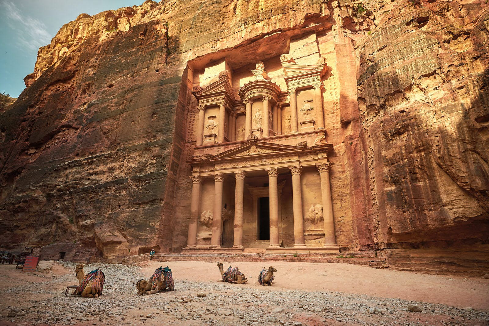

Petra is an ancient city located in present-day Jordan. It is known for its rock-cut architecture and is considered one of the most important archaeological sites in the Middle East. The site was named a UNESCO World Heritage Site in 1985 and is often referred to as the "Rose City" because of the color of the stone from which it is carved.
General Information
Petra is a complex of structures carved into the rock, including temples, tombs, and residential areas. The site covers an area of around 264 square kilometers and is believed to have been inhabited as early as the 4th century BC. The most famous structure at Petra is the Treasury, a temple that is carved into the rock face and is adorned with intricate carvings and sculptures.

History
Petra was established as a city by the Nabataean Arabs in the 4th century BC. The Nabataeans were a nomadic tribe that controlled trade routes in the region and Petra became an important center for trade and commerce. The city reached its peak in the 1st century AD, but it was eventually abandoned after the Roman conquest in 106 AD. The site was rediscovered in 1812 by a Swiss explorer.

Build
Petra's buildings are built primarily of sandstone, a soft rock that can be easily carved. The Nabataeans employed a technique known as "ashlar," which involved shaping large stone blocks to fit together perfectly without the use of mortar. The city is known for its elaborate rock-cut architecture, which includes temples, tombs, and residential areas. The most famous structure at Petra is the Treasury, a temple that is carved into the rock face and is adorned with intricate carvings and sculptures.

Fun facts
- Petra is also known as the "Rose City" because of the color of the stone from which it is carved.
- Petra was the capital of the Nabataean Arab kingdom between 400 BC and 106 AD./li>
- Petra was rediscovered in 1812 by Swiss explorer Johann Ludwig Burckhardt.
- The Treasury, also known as Al-Khazneh, is the most famous structure at Petra and is carved into the rock face.
- Petra was named as one of the New Seven Wonders of the World in 2007.